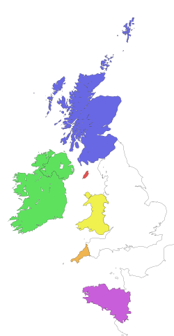
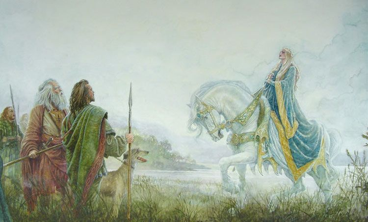
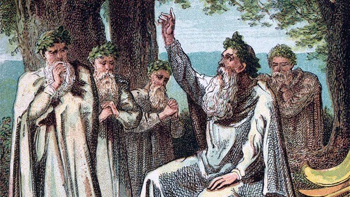
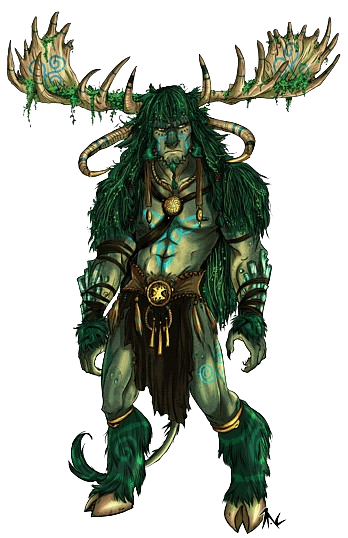

While Celtic mythology is most popularly associated with Ireland, it encompasses all the Celtic nations: Ireland, Scotland, Wales, Brittany (France), Cornwall (England), and the Isle of Man. Unusually, the mythology varies significantly by region—changing almost entirely from place to place—and is classified as "Celtic" primarily because the peoples of these regions identify as Celtic. They fall into three categories: Goidelic (Irish and Scottish), Insular Brythonic (Welsh and Cornish), and Continental Brythonic (Continental Europe). Because their legends, customs, and cultures differ so greatly, it is difficult to describe the mythology as a cohesive whole—let alone recount their specific creation myths—as the tradition focuses far more on the dynamics of the gods and the spiritual realm of the natural world.
Otherworld

The "Otherworld" (Tír na nÓg, Annwn, or Avalon) is a parallel dimension of eternal youth and abundance. Its organization depends on the region:
The Goidelic version: is the richest of them all, ruled by the Tuatha Dé Danann gods and is located beyond the sea's horizon or beneath the Sídhe (earth mounds inhabited by deities and fairies of great beauty and magical power, organized into courts resembling nobility). It is a realm of eternal feasts, healing, and immortality (known by names such as Tír na nÓg [Land of Youth], Mag Mell [Plain of Pleasures], or Emain Ablach [Island of Apples]).
Insular British version: possesses darker, mystical characteristics linked to the sovereignty of the land. Its description can be found in the tales of the Mabinogion, which recount that this land is ruled by mystical kings such as Arawn and Gwyn ap Nudd, and is a place of eternal youth, free from disease and filled with abundant food (known names: Annwn and, later, Avalon).
Continental British version: they divided the universe into three parts. They divided the cosmos into Albios (the upper world/sky), Bitu (the physical world of the living), and Dubnos or Dumnos (the deep/lower world). Dubnos was the Gaulish Otherworld. Far from being a place of punishment, it was the sacred land of the ancestors and chthonic gods (such as Sucellus and Cernunnos), associated with fertility, regeneration, and the resting of souls before reincarnation.

The Otherworld was invisible to humans, but passage to and contact with this dimension were facilitated by the druids—spiritual leaders who acted as mediators between the two worlds. Serving as priests, philosophers, educators, historians, healers, seers, and judges, they performed sacrifices, conducted religious ceremonies, and interpreted omens; carrying out these roles required up to twenty years of training.
Main Creatures
Banshee: messengers from the "Otherworld" (Tír na nÓg), famous for their piercing wail
that heralds someone's imminent death.
Dullahan: a headless horseman who holds his own skull in his hand and rides a black
horse. He stops in front of the houses of those who are about to die.
Kelpie: a horse-like water spirit that inhabits lakes and rivers. It lures travelers to
mount its back, taking them down into the depths.
Leprechaun: the famous magical shoemaker of Irish folklore, known for playing pranks
and guarding pots of gold hidden at the end of the rainbow.
Selkies: shapeshifting creatures that live as seals in the ocean but can shed their
skin and assume human form on land.
Fomorianos: an ancient race of deformed sea giants who represented the forces of chaos,
frequently at war with the Tuatha Dé Danann gods.
Main Gods

Dagda: leader of the Tuatha Dé Danann, he is known as the god of fertility, magic, and
wisdom.
Lugh: renowned as the "god of many talents," associated with the sun, light, oaths, and
mastery of various arts
Morrígan: shapeshifter capable of taking the form of a raven to fly over battlefields,
goddess of war, fate, and sovereignty
Brighid: triple goddess associated with fire, healing, poetry, and metallurgy.
Nuada Airgetlám: is the first king of the Tuatha Dé Danann in Irish Celtic mythology, a
god of war and healing.
Manannán mac Lir: considered the ruler of the Otherworld, his domain is frequently
associated with the sea, magic, and paradisiacal islands such as Mag Mell.
Cernunnos: the "Lord of Wild Things," associated with nature, fertility, abundance, and
cycles of renewal
Taranis: god of thunder, lightning, and celestial fire
Epona: goddess protector of horses, donkeys, and mules
Rhiannon: goddess of fertility, the moon, horses, and magic
How this reaches us
Celtic mythology was transmitted almost exclusively through oral tradition, as the Druids considered it sacred—and forbidden—to record their teachings in writing. This knowledge has come down to us through accounts by Roman conquerors (such as Julius Caesar) and, later, by medieval Christian monks who compiled and recorded the ancient legends.
Celtic mythology found its way into the works we consume today thanks to these compilations. One example is the Mabinogion, which helped shape the magical creatures and worlds now present in pop culture. Another instance is the legend of King Arthur—recorded in Geoffrey of Monmouth’s Historia Regum Britanniae—which later blended with elements of Celtic folklore and underwent Christianization through narratives such as the quest for the Holy Grail. From this process emerged stories like those of the Knights of the Round Table and Camelot, which became key touchstones for the fantasy genre.
Furthermore, in the late 18th century, Romanticism revived Celtic imagery in opposition to Enlightenment rationality. The emphasis placed on the mystical, the medieval past, intense emotions, and nationalism found an ideal setting in these legends. One example is Tristan and Isolde, a narrative that influenced many of the tropes and clichés found in modern romance stories.
Examples of famous works that use this mythology as a reference are Shrek, Harry Potter, Star Wars, Pokémon, Teen Wolf, Stranger Things, etc.